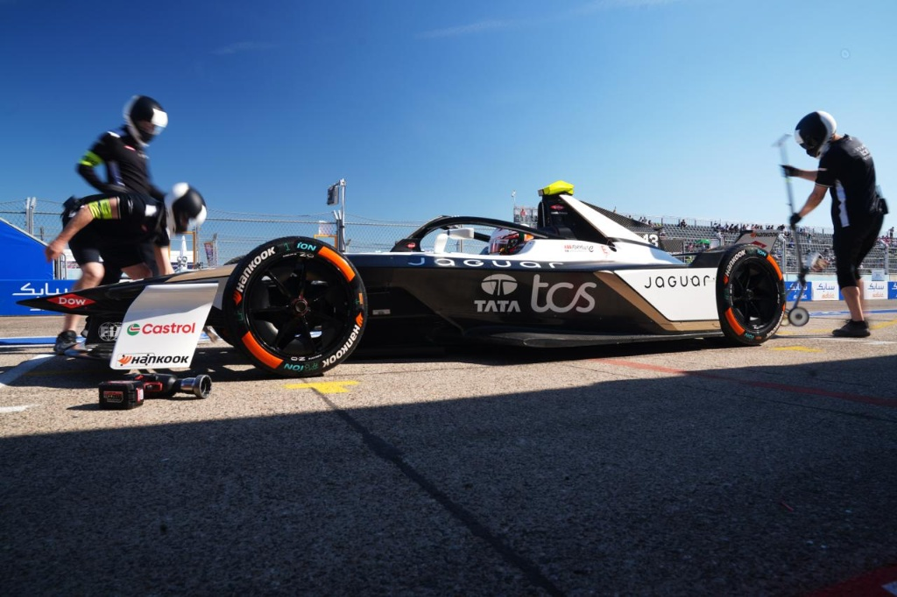
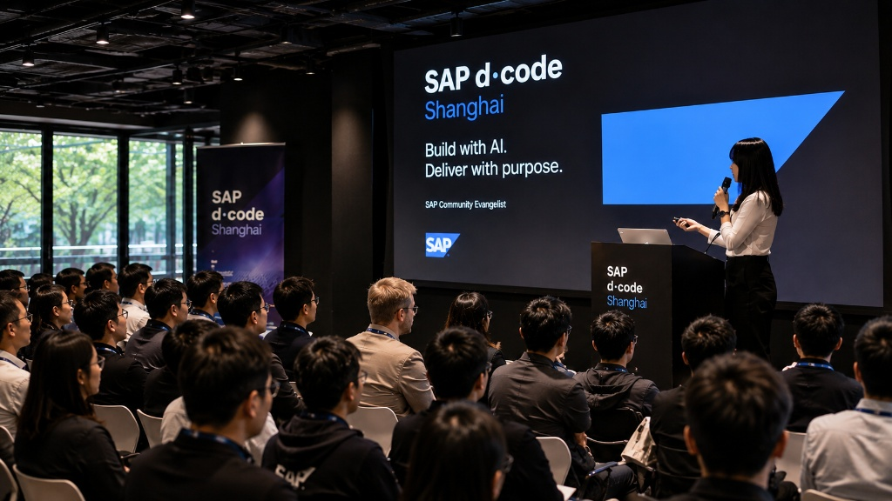
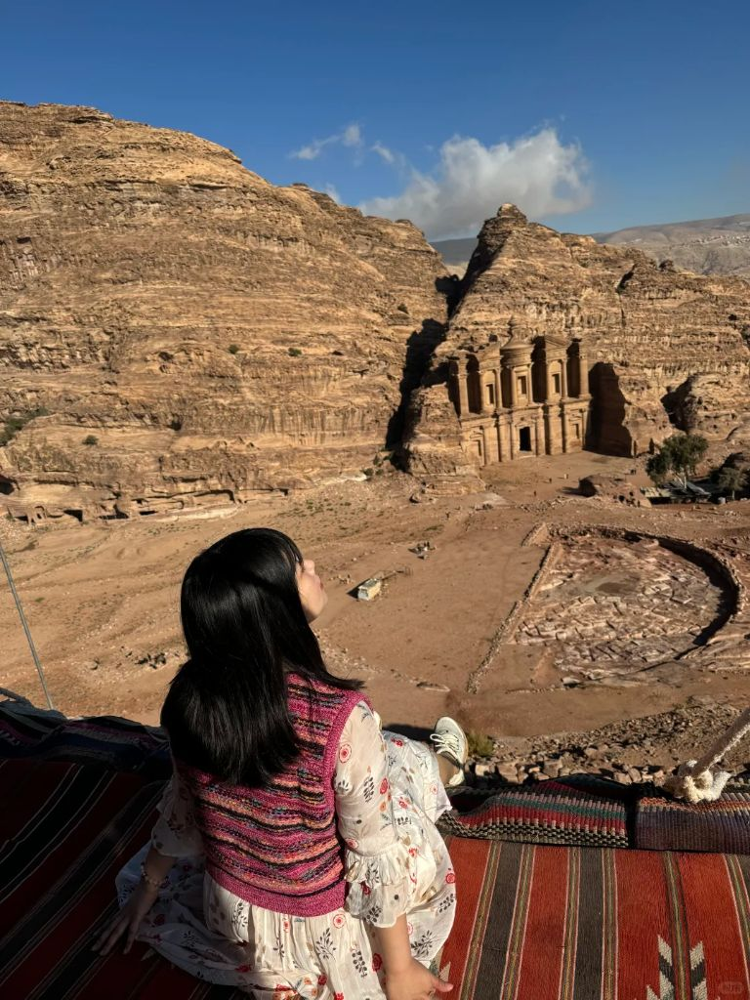

Tata Consultancy Services
Marketing Manager
Building local market visibility and demand through sponsorships, thought leadership, events and integrated marketing programs.
Marketing · AI · Community
Building brands, communities
and AI-powered marketing systems
for global technology companies.
Marketing Manager
Building local market visibility and demand through sponsorships, thought leadership, events and integrated marketing programs.
MBA (Distinction)
Deepened my understanding of strategy, innovation and international business through a part-time MBA completed alongside full-time work.
Marketing Manager
Helping scale a fast-growing digital consultancy through integrated marketing, account-based engagement and brand development during its pre-IPO journey.
Community Evangelist
Growing technology communities through ecosystem engagement, KOL programs and community-led growth.
Product Operations Team Lead
Supporting large-scale content operations and process optimization during China's consumer internet boom.

Turning a global motorsport partnership into a platform for technology storytelling, stakeholder engagement and brand relevance.
Open Case StudyDesigning a structured account-based marketing framework to deepen enterprise relationships and accelerate pipeline creation.
Open Case Study
Connecting customers, developers, partners and experts through a scalable community ecosystem built on trust, participation and advocacy.
Open Case StudyWhy AI makes judgement more valuable than execution — on the structural shift reshaping how marketing work is created, distributed and valued.
Read ThoughtFrom content output to always-on execution — a practical map of the agent types that matter most, organised by function and built around real marketing pain points.
Read ThoughtOn resilience, long-term thinking and organisational adaptability during uncertainty — drawing on analysis of 4,100+ companies.
Read Thought"The future of marketing is not content production.
It's market understanding."
Reading, wandering
and collecting perspectives.

Exploring the intersection of marketing,
technology and human behaviour.